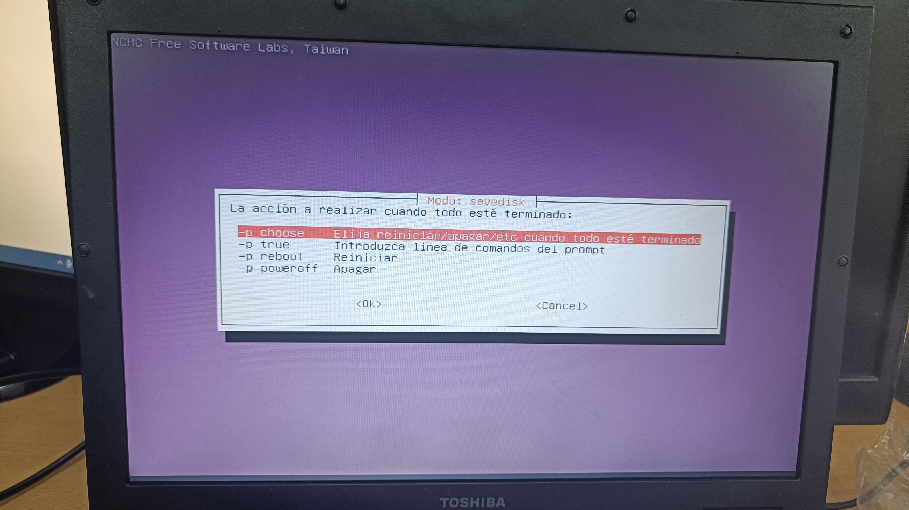
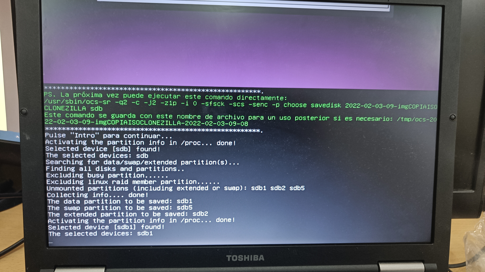

Clonezilla
* SE RECOMIENDA PONER LA WEB ENTRE 110% Y 125% *

Cuando tengamos creado el pen booteado se inicia desde ahi y nos saldrá la captura actual que será el inicio de clonezilla
Le daremos a mantener la distribución de teclado, para no confundirnos al teclear.

Elegimos la opción de idioma España, para que salga el programa en Español.

Seleccionamos Iniciar Clonezilla para que nuestro programa empieze a funcionar, la otra opción será por si queremos usar la shell.

Aqui elegimos device-imagen porque queremos hacer una imagen del sistema.
Como queremos guardar la imagen en un disco duro externo , la primera opción es la que elegimos en este caso,
Al darle nos sale una pequeña pantalla abajo , tendremos que pulsar otra vez Enter.

Una vez pasado el punto anterior , nos saldra esta pantalla con los discos que detecta el sistema, anotamos cual es el disco duro externo y después Ctrl + C.
Le damos a Omitir chequeo para que no tarde tanto una vez acabado.
Elegimos el home para que sea el directorio donde se guarde.

El Modo beginner es un modo que deja por defecto algunas opciones y es que el nos viene perfecto.
Savedisk para tener una copia completa.
Ponemos un nombre para nuestro disco.
Damos OK en el disco que queremos clonar
Para la compresión usaremos ZIP , ya que es el más usado a nivel mundial.

Volvemos a darle a omitir la comprobación.

Le decimos que no queremos la comprobación en este caso ya que tardaría mucho , aqui depende de cada persona.
Si quiere cifrar el sistema se le da a que si , es una parte importante por si os cogen el ordenador , en mi caso le dare a no para que no pida contraseña en el tutorial.
Una vez cuando acabe de hacer la copia , le damos a que reinicie el sistema
Por último nos pide que confirmemos la configuración , le damos al OK.

Cuando acabemos nos muestra el proceso de descarga .
Le daremos a reiniciar y nuestro copia ya estaría realizada.
Restaurar Clonezilla

Aquí restauraremos el sistema , por lo tanto le daremos a restoredisk.

Elegimos el archivo de imagen disco que queremos restaurar.
Seleccionamos el disco externo dónde se guardara la restauración.
Esta opción es para una acabado la descarga , se hará la opción que elegimos.

Confirmamos los ajustes que hemos puesto anteriormente.

Aquí se muestran la restauración en curso.